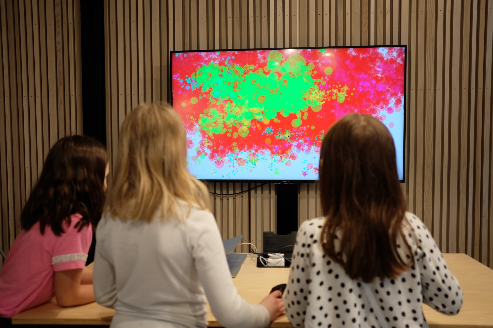

Sound Painter
Creative Technology, Prototyping, Processing

For Oslo Children‘s Museum in co-operation with Nora Tessem I created a prototype for an interactive installations that let‘s people make noise to throw virtual paint at a screen. The colour of the paint is based on the pitch of the sound and the intensity matches the volume.
Kids are often expected to sit and be quiet. We noticed that many of them found it especially fun that they where supposed to make a lot of noise.